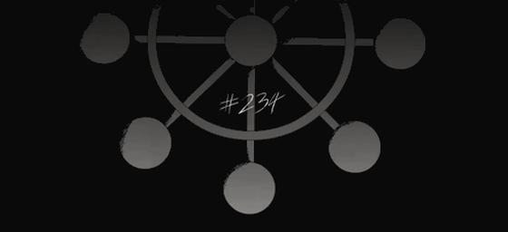

P/01 · Project · October 2026 · Python
Mahoraga
the adaptive agent
A minimal, local, extensible AI agent in pure Python. Zero external dependencies. Everything it does lives in a 50-line tool loop.

01 / What it is
The whole thing is a loop.
You send a message → the LLM thinks → if it wants a tool, it calls one → you approve → results go back → it thinks again → until it has a real answer. That's the whole thing. Everything else is decoration.
A tool registry gives the model hands, a policy layer decides what runs free and what asks first, and every turn is persisted to SQLite so the agent remembers after a restart. That's the soul of an agent. Hermes runs that soul at full scale — Mahoraga keeps the smallest honest version of it, built with a lot of respect for the real thing.
02 / Architecture
Small enough to hold in your head.
Every module has one job. The wheel at the top of the terminal is, admittedly, decoration — but it's the important kind.
mahoraga/
├── core/
│ ├── loop.py ← the agent loop (50 lines, the beating heart)
│ ├── runtime.py ← provider + tools + memory, wired
│ ├── context.py ← message history, token estimation, truncation
│ ├── budget.py ← turn/token/time budget — stops runaway loops
│ └── wheel.py ← Mahoraga dharma wheel animation (the spinner)
├── llm/
│ ├── openai_compat.py ← any /v1/chat/completions endpoint
│ ├── provider.py ← abstract provider interface
│ ├── ollama.py / llama.py ← thin adapters
├── tools/
│ ├── registry.py ← register, describe, execute tools
│ ├── schema.py ← auto-derive JSON schema from Python signatures
│ └── executor.py ← the safe path: approve → run → audit → cap
├── plugins/ ← 8 built-in tools (read, search, shell, http, notes…)
├── policy/ ← permissions, approval prompt, audit log
├── memory/ ← every turn persisted, restored on next launch
└── agent/ ← the TUI (ANSI, stdlib-only) + entry point03 / Extending it
Add a tool in one function.
Three ways, from simplest to most control — one function, a plugin file, or an external plugin on top. The simplest is a plain Python function:
def my_tool(query: str, limit: int = 10) -> str:
"""Search something custom."""
return f"found {limit} results for {query}"
from mahoraga.tools.registry import Registry
from mahoraga.tools.schema import auto_schema
reg = Registry()
desc, schema = auto_schema(my_tool)
reg.register("my_tool", desc, schema, my_tool)And any brain fits. Point ~/.mahoraga/config.json
at any OpenAI-compatible endpoint — a local llama.cpp server, Ollama, vLLM,
LM Studio, or a cloud API — and switch providers at runtime:
{
"base_url": "http://localhost:8080/v1", // llama.cpp server
"model": "openbmb/MiniCPM5-2B-GGUF:Q4_K_M"
}04 / Memory & policy
It remembers. It asks before it gets reckless.
Every turn is stored in ~/.mahoraga/memory.db. On next launch,
Mahoraga replays the last 30 messages into its context — a fresh session
never deletes the database.
Policy decides what runs free, what asks once, and what is refused outright — with every tool call appended to an audit log. The philosophy: run all the bash except genuinely dangerous commands, and read, write, modify files freely.
05 / Quick start
Three commands.
# 1. copy the example config
cp examples/config.example.json ~/.mahoraga/config.json
# edit it: point base_url at your local LLM
# 2. run
python3 -m mahoraga
# 3. yolo mode (skip approval prompts)
python3 -m mahoraga --yoloMIT — fork it, break it, make it yours.